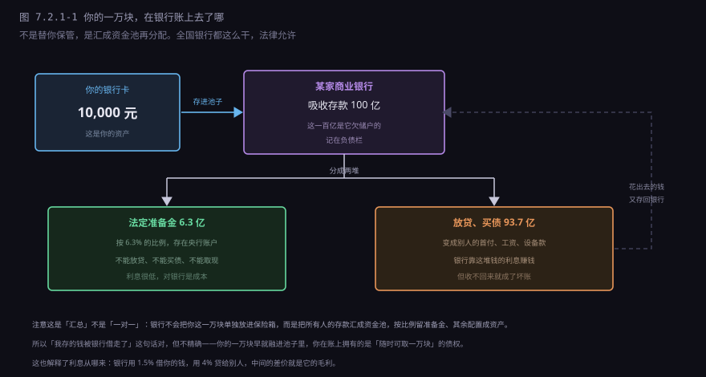
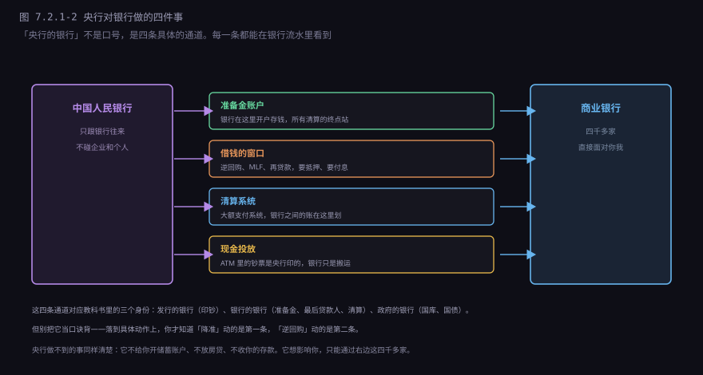
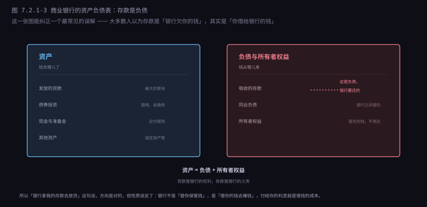
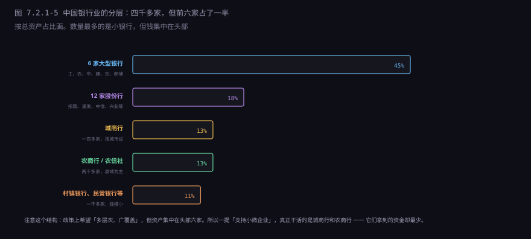

约 0.85 万字 · 6 张图 · 从「工资卡里的一万块」出发， 走完存款、准备金、清算、放贷、挤兑这条完整链路， 看清两级体系到底在哪一层
10 号下午，手机弹出一条短信：工资入账 10,000 元。你打开 App 看了一眼， 余额从 3,241 变成 13,241，然后关掉。
这一万块现在在哪？
不在银行的金库里。它在银行的一台数据库里，是一行记录： 户名是你，金额一万，状态正常。这行记录对你来说是资产（你随时能取）， 对银行来说是负债（它随时要还）。同一行字，两个方向。
银行拿到这笔钱，也不会锁进保险柜。它会做一件事：留一小部分，其余借出去。 留下的是准备金，借出去的是贷款。你的钱变成了别人的首付、别人的工资、 别人公司的设备款。

这里必须说清一个常见误解：不是「你的这一万块」被单独借出去了。 银行把所有储户的钱汇成一个池子，从池子里往外放贷。 你的一万块是池子里的一瓢，没人能追踪它具体去了哪。 你在账上拥有的不是「那张钞票」，是「随时可以取出一万块」的债权。
举个整数的例子。一家银行吸收了 100 亿存款，法定准备金率 6.3%， 它至少要把 6.3 亿放在央行账户里，一分不能动；剩下的 93.7 亿， 拿去买债、放贷、做同业。这个「只留一小部分」的制度叫 部分准备金制度，全世界的商业银行都这么干，而且是法律允许的。
凭什么敢？因为不会所有人同一天来取钱。 每天有人存、有人取，进进出出大致抵消，总量是稳的。 银行只要留够应付日常取现的那部分，剩下的都能拿出去生息。
现在回头看那三个问题：钱在账本上；银行把它借出去了； 你取一万它有，所有人一起取它没有。 第三个答案，就是这一节后面要讲的全部麻烦的来源。
「存在央行账户里」这句话，很多人没有画面。它其实和企业开对公账户是一回事： 商业银行在人民银行开一个户，里面的钱叫准备金存款。 这笔钱不能拿去放贷，不能买债，不能从 ATM 取出来， 但它可以转账——银行之间的清算，划的就是这个户里的钱。
准备金分两块：
法定准备金：按存款余额乘一个比例，必须留。 这个比例由央行定，按机构类型不同：大型银行 7% 上下， 中小银行 5% 左右，加权平均现在 6% 出头。本节为了算账方便，统一按 6.3% 举例。 数字会变，每次降准降的就是它。
超额准备金：法定之外多留的，自愿，随时可用。 银行留超额是为了应付大额取现和日终清算，留多少看它自己的判断。
为什么非要强制留一部分？三个作用，一个比一个实际。
第一，给挤兑留一层缓冲。虽然这层很薄—— 6.3% 意味着 100 亿存款只有 6.3 亿能立刻动用，真挤兑根本不够。 它挡不住挤兑，但能给银行争取一两天时间去借救兵。
第二，给央行一个控制总量的抓手。这是它真正的用途。 准备金率降 0.5 个百分点，100 亿存款就能多放出 5000 万。 全国人民币存款 300 万亿左右，降 0.5 个点，账面上能释放 1.5 万亿。 新闻里那句「降准 0.5 个百分点，释放长期资金约 1 万亿」，就是这么算出来的。
第三，给清算垫底。银行之间每天要互相划账， 划到最后总有人账户不够，准备金是最后的垫付来源。
有人会问：那这笔被锁住的钱，银行不亏吗？ 有一点利息，但很低——法定准备金利率 1.6% 上下，超额只有 0.35%。 对比它放贷能收 4%，这笔钱等于「被强制存了一个低息定期」。 所以准备金率对银行是成本，不是收益， 银行天生不喜欢高准备金率，这是它游说的第一件事。
这是最容易被跳过、又最能说明「两级」在哪的一步。
你在 A 银行的 App 里，给朋友的 B 银行账户转 100 块。点确认，两秒到账。 这两秒里发生了什么？
第一步，A 银行扣你的钱。你的余额从 13,241 变成 13,141。 在 A 银行的账上，它欠你的钱少了一百，负债减一百。
第二步，A 银行欠 B 银行一百。 这笔钱不在任何一台 ATM 里，也不能装箱运过去。 两家银行之间的债务，只能在一个地方结清——央行。
第三步，央行记账。清算系统里划一笔： A 银行的准备金账户减 100，B 银行的准备金账户加 100。 这才叫「钱到账」。
第四步，B 银行给你朋友加钱。 朋友余额加 100，B 银行多了一笔欠他的负债。
看明白这四步，你会发现：真正被移动的，是两家银行在央行账户里的准备金。 你和朋友看到的数字，只是这笔底层划账的两端投影。 央行是唯一的记账场所，因为它垄断了「银行的钱」。
如果你们俩用的是同一家银行，事情就简单了： A 银行内部把两个账户一增一减，央行那边一分钱没动。 这也解释了为什么同行转账永远秒到，跨行要过一道清算。
跨行还分两条路。小额（几万以下）走网联、银联这类清算机构， 实时或准实时；大额走大额支付系统（HVPS）， 按时间段批量处理，单笔五万以上基本都走这条。 春节前转账容易卡，不是系统坏了，是清算窗口就那么多， 交易量翻几倍，只能排队。
所以「到账」这个词的实质是：两家银行在央行的账户余额完成了变动。 银行系统里跑的不是钱，是记账指令；钱本身只有一种形态—— 央行账本上的那一串数字。
清算到日终，A 银行发现自己准备金不够——今天放贷放多了， 或者客户取现取多了，账上差了 5 个亿。这 5 个亿必须在当天补上， 否则日终结算过不去，第二天开门就是违约。
补的办法有两个层级。
第一层，找别的银行借。这叫同业拆借。 B 银行今天准备金富余，把多余的借给 A，明天 A 还回来，付一点利息。 这个市场叫银行间市场，最重要的价格是 DR007—— 七天期、以国债等优质债券质押的回购利率。 央行每天盯着它，因为它是「银行体系里钱松不松」最灵敏的体温计。 正常年份它在 1.5% 到 2% 之间晃，一旦冲高，说明有银行在抢钱。
第二层，找央行借。同业市场也借不到的时候， 银行只能找「最后贷款人」。央行的钱不是白给的，最常见的三种：
逆回购：央行今天给你 100 亿，你把国债押给它， 七天后的今天，你还 100 亿加利息，它把国债还你。 名字叫「回购」，实质是一笔有抵押的七天贷款。 这是现在央行投放短期资金最主要的方式，几乎每天在做。
MLF（中期借贷便利）：期限三个月到一年，也要抵押， 利率比逆回购高。它是「中期资金」的价格，也是 LPR 报价的锚之一。
再贷款、再贴现：定向的工具。 再贷款是央行直接给银行一笔钱，指定用途（支农、支小、碳减排）； 再贴现是银行把企业拿来贴现的票据，再卖给央行。 这两个词听着老，其实一直在用，只是规模比逆回购小。

这四条通道之外，央行和商业银行之间没有别的往来。 它不给你开储蓄账户，不放房贷，不收你的存款，也不给你发信用卡。 你想跟央行发生关系，唯一的路径是「你是某家银行的客户」。 这就是「两级」的第一层含义：层级不是行政级别，是往来对象的隔离。
2013 年 6 月，这套机制曾经当场卡住过一次。
当时很多银行靠「隔夜资金」养「长期资产」—— 今天借明天到期的钱，拿去买一年的同业理财。 只要每天能滚动借到新钱，游戏就能转下去。 大家心里有个假定：真出事，央行不会看着我们死。
6 月中旬，央行连续不续作。6 月 20 日，隔夜利率从 3% 冲到 13%， 盘中一度到 30%。银行手里握着几百亿的长期资产， 却借不到过夜的钱，只能高价抢。那几天银行股集体跌停， 整个市场都在等央行松口，央行没松。
这件事后来被叫作「钱荒」，也叫「央行教训银行」。 教训不是「央行故意整人」，是让银行知道短期资金不是无限的。 从那以后，「流动性覆盖率」这个指标才真正被当回事—— 它 2013 年之前就有，但没人认真算。
银行缺钱可以找央行，政府缺钱能不能找央行？法律上不能。 这条边界不是经济学家想出来的，是被历史打出来的。
最典型的例子就在中国。抗战到内战期间，政府财政赤字靠央行印钞弥补。 法币发行量从 1937 年的 14 亿，涨到 1948 年的 660 万亿， 物价涨了几百万倍。发工资要用麻袋装钱，上午领的钱下午就买不到东西。 这不是比喻，是当时的日常。
更近的是津巴布韦。2000 年代政府缺钱就印，2008 年月通胀率高到几百亿个百分点， 最后只能放弃本币，改用美元和兰特。
所以《中国人民银行法》第二十九条写得没有余地： 中国人民银行不得对政府财政透支，不得直接认购、包销国债。 这条规定的实质，是把「印钞权」和「花钱权」分开—— 政府想花钱，只能发债，向市场借，借了要还。
各国尺度不一样。美联储在二级市场大规模买国债，日本央行直接持有大量国债， 中国相对克制，主要通过降准、再贷款投放。但底线是一样的： 不能直接、无条件、无限量地给财政输血。 一旦开了这个口，印钞就没有约束，通胀就成了唯一的刹车， 而通胀这个刹车，刹的是所有人的钱包。
现在回到商业银行自己。它的生意模式一句话能说完： 低息吸存，高息放贷，赚中间的差。 但「差」有多大，很多人没算过。算一遍就明白它为什么是薄利生意。
假设你贷 100 万买房，30 年，年利率 4%，等额本息。 月供 4774 元，30 年总共还 171.9 万，其中利息 71.9 万。 看着不少——银行赚了 71.9 万。
但这 71.9 万是收入，不是利润。把它拆到一年看，账就清楚了：
| 100 万房贷（第一年） | 金额 | 说明 |
|---|---|---|
| 利息收入 | 4.0 万 | 贷款余额乘 4% |
| 减：资金成本 | −1.6 万 | 付给储户的利息，加上准备金被锁的机会成本 |
| 减：运营成本 | −1.0 万 | 员工工资、网点租金、IT 系统、ATM 维护 |
| 减：风险成本 | −0.5 万 | 计提的坏账准备，为「有人还不上」预留 |
| 税前利润 | 0.9 万 | 还要交 25% 所得税，净利约 0.68 万 |
一笔 100 万的房贷，银行第一年净赚不到一万。它的资产收益率只有 0.9%， 比超市卖一瓶水还薄。这就是为什么银行必须把规模做上去： 工行的生息资产四十万亿，乘 1.5% 左右的净息差，才是六千亿的净利息收入。 薄利多销，销的是别人的钱。
这里有个容易混的指标。单笔房贷的净息差是 （4.0 − 1.6）÷ 100 = 2.4%，但全行业平均只有 1.5% 左右。 差在哪？因为银行还有大量低收益资产——国债、同业拆放、 准备金，这些只赚 1% 到 2%，把平均数拉下来了。 看财报时，净息差降 0.1 个百分点，对一家大行就是几十亿的利润。
除了利差，还有两块收入。中间业务：转账手续费、理财代销、 托管、结算、信用卡年费。这块不占用资本，风险低，是监管鼓励的转型方向。 发达国家银行中收占比能到 40%，中国大行大概 15% 到 20%。 投资收益：拿自有资金买债、买基金，波动大，不算稳定来源。
但银行不是想放多少贷就放多少。它同时被三个目标拉扯， 而这三个目标互相打架：
| 目标 | 具体要求 | 和另外两个的冲突 |
|---|---|---|
| 安全性 | 别倒闭，资本要厚 | 资本留厚了，能放贷的钱就少 |
| 流动性 | 随时能应付取款 | 留的现金多了，收益就低 |
| 盈利性 | 股东要回报 | 追利润就得放高风险贷款 |
这就是「三性平衡」。监管规定的是下限（资本充足率、流动性覆盖率）， 银行自己在上面做取舍。
一旦某个目标被压得太狠，银行就会想办法绕。最常见的绕法是同业业务： 银行 A 把钱借给银行 B，B 拿去放贷。对 A 来说这是「同业资产」， 不占信贷额度；对 B 来说这是「同业负债」，不占存款考核。 钱还是那些钱，只是换了个会计科目。
这套玩法在 2010 年之后大规模膨胀，形成了所谓的「影子银行」。 它确实满足了实体经济的融资需求，但也把风险挪到了监管看不见的地方—— 一笔贷款层层嵌套，最后谁在承担风险，没人说得清。 2017 年之后的「去杠杆」，主要工作就是拆这套结构： 把同业理财压降、把通道业务堵死、把表外资产赶回表内。
这一条最容易搞反。大多数人的直觉是「我存了一万在银行，银行欠我一万」—— 前半句对，后半句也对，但方向要拧一下： 在银行的账上，这一万是它的负债，不是它的资产。

为什么？因为负债的定义是「你欠别人的」。 你把钱存进来，银行拿了这笔钱去放贷，但它随时可能要还给你。 所以它必须在账上记一笔「欠你的」。
贷款反过来，是银行的权利：它有权向你收利息、收本金，所以记在资产栏。
具体到一张表。某家银行有 100 亿存款、90 亿贷款、7 亿准备金、 8 亿债券和固定资产，所有者权益 5 亿。 左边资产 105 亿（90 + 7 + 8），右边负债 100 亿加权益 5 亿，两边平。
这个等式永远成立：资产 = 负债 + 所有者权益。 它有个直接推论——只要存款增加，资产端必须同步增加。 多出来的钱不会凭空消失，它一定变成了某笔贷款、某只债券， 或者趴在央行的准备金账户里。所以「钱去哪了」这个问题， 在银行的资产负债表上永远有答案。
这个理解有个实际用处：看银行倒闭时谁能拿回钱。 破产清算的顺序是：先还存款人（有存款保险的由保险基金先垫付）， 再还其他债权人（同业、债券持有人），最后才是股东。 股东排在最后，所以他们最有动力让银行冒险—— 赚了是股东的，亏了是存款人和债权人的。 这就是「道德风险」，也是银行为什么要被严格监管的根本原因： 它的生意用的是别人的钱，亏了却由别人承担。
还有一个推论，很多人绕不过来：银行放贷用的不是「替你保管的那笔钱」。 它用的是自己账上的资产，也就是资金池。 你随时能取钱，靠的是准备金和「大多数人不会同时取」这个统计事实， 不是靠「金库里有一张写着你名字的钞票」。
2023 年 3 月，硅谷银行用两天时间证明了上面那句话。
它的资产负债表不难看：1754 亿美元存款，资产主要是国债和住房抵押贷款支持证券， 坏账率极低，客户是硅谷的科技公司，质量不差。 问题出在三个地方同时凑齐了。
第一，资产端期限太长。它 2020 年低利率时买了一大堆长期债券， 利率一涨，这些债券的市价就跌，浮亏一百多亿。 只要不卖，浮亏不算损失；但一卖，就变成实亏。
第二，存款高度集中。它的客户都是创业公司， 账上趴着融资款，一家公司几千万美元。这类存款没有存款保险覆盖—— 美国的上限是 25 万美元，它 94% 的存款超过这个数。
第三，信息传得太快。3 月 8 日它宣布卖资产、增发股票补资本， 消息当天进了每一个创始人的群。
3 月 9 日，一天之内被取走 420 亿美元——相当于它存款的四分之一。 3 月 10 日，监管机构接管。从「看起来还行」到「关门」，不到 48 小时。
它的资产不是假的，它也不是资不抵债。它是被流动性杀死的： 钱都在长期债券里，取不出来；要取就得亏本卖；亏本卖的消息一传， 更多人要取。这是一个自我实现的循环。
挤兑最可怕的地方就在这里：一家本来没问题的银行， 只要足够多的人相信它有问题，它就真的会有问题。 谣言不需要是真的，只需要被相信。
历史上最惨的一次是 1930 年代的美国。大萧条期间九千多家银行倒闭， 大部分不是资产坏了，是被挤兑死的。罗斯福 1933 年上任第一件事， 是宣布「银行假期」——所有银行关门四天，检查一遍再分批重开。 用「暂停营业」硬生生打断了挤兑的链条。
现代的办法是存款保险。中国 2015 年 5 月 1 日实施： 同一家银行、同一个存款人，50 万元以内的存款全额赔付， 超过部分从清算财产里按比例受偿。
这个制度的关键不是「赔钱」，是改变预期。 只要大家相信「我的钱有保险」，就不会跑去挤兑； 没人挤兑，银行就不会倒。它用「承诺赔付」换来了「不需要赔付」—— 这是金融监管里最漂亮的一招，成本极低，效果极强。
但存款保险有边界：它保的是「存款」，不保理财、不保信托、 不保银行发的债。2018 年资管新规之后，银行理财全部改成净值型， 「保本理财」这个词从法律上消失了——买者自负，亏了不能找银行。
2022 年河南几家村镇银行出事，储户取不出钱，最后靠垫付解决。 这件事的教训不是「小银行不能信」，是存款保险的覆盖和宣传要做到位—— 如果储户清楚 50 万以内有保险，就不会恐慌性挤兑； 恐慌本身，才是把小问题放大成大问题的那个机制。
有一类银行，成立的目的不是赚钱，资金来源也不一样。
中国有三家政策性银行，都是 1994 年成立的： 国家开发银行、中国进出口银行、中国农业发展银行。 它们的共同点是不吸收公众存款，靠发行金融债筹钱。
这一条决定了它们的整个性格。没有存款，就没有储户来取钱， 也就不受挤兑威胁。所以它们可以持有期限极长的资产—— 一条高铁修十年，贷款二十年才还完，商业银行做不了这个， 因为它的钱是三年期、五年期的存款，到期要还给人。
三家各有地盘。国家开发银行管基建、棚改、一带一路， 是全球最大的开发性金融机构。2015 到 2018 年棚改货币化那几年， 它每年投放几千亿到一万亿，直接把三四线城市的房子买成了一个市场。
中国农业发展银行管粮棉油收购。每年夏粮上市， 它要给中储粮系统放几千亿贷款，保证「农民卖粮当场拿到钱」。 这件事商业银行做不了——粮食收购是政策性业务，价格倒挂，不赚钱。
中国进出口银行管外贸和对外投资， 给成套设备出口、海外工程提供长期低息贷款。中国企业去非洲修铁路、 去东南亚建电站，背后常有它的钱。
政策性银行的不良率看起来很低，但不能直接跟商业银行比。 它的坏账可以被展期、被重组、被财政兜底，账面上不体现为不良。 它的信用本质上是国家信用，不是商业信用。 所以它发债的利率接近国债，比商业银行便宜一大截， 这个便宜本身就是一种补贴。
反过来说，它也不是万能的。项目周期长、收益率低、决策受政策影响大， 一旦地方财政吃紧，还款来源就悬空。2020 年之后一些地方城投的债务问题， 有一部分就来自这类「准政策性」的投放。
中国的银行业法人机构有四千多家，但资产高度集中。

六家大型银行（工农中建交邮储）占 45%， 十二家股份制银行（招商、兴业、浦发等）占 18%， 城商行 13%，农商行 13%，剩下的村镇银行、民营银行、外资行加起来 11%。
这个结构带来一个解不开的矛盾：服务小微的银行，恰恰最缺钱。
大行有网点、有低成本存款、有国家信用，但它们做大企业、做房贷、 做政府项目。同样一笔 500 万的小微贷款和 5 亿的大企业贷款， 流程成本差不多，收益差一百倍——从成本核算上，它没有动力做小微。
城商行、农商行服务本地小微，离客户近，看得清老板的厂子有没有开工。 但它们的资金来源窄、成本高，一笔坏账就可能吃掉几年利润。 所以「融资难」和「融资贵」是两个不同的问题： 前者是大行不愿做，后者是小行成本高。 政策上一直在用定向降准、支小再贷款去补这个缺口， 本质是拿央行的便宜资金补贴小行的成本。
村镇银行是更极端的一层。规模小、治理弱，抗风险能力差。 2022 年河南几家村镇银行出事，储户取不出钱，最后靠垫付解决。 这件事给整个行业提了个醒：小银行的风险不是「会不会倒」， 是「倒了之后怎么让储户不恐慌」。
管银行的不是一家，是三家，各管一段。
落到具体的事上更容易记：你想开一家银行，找国家金融监督管理总局批牌照； 银行乱收费、理财忽悠你，找它的消费者保护部门； 银行出事要接管，也是它； 这家银行大到倒了会拖垮整个系统，央行管（系统重要性银行名单）； 银行要上市、要发债，证监会审。
中国人民银行管两件事：货币政策（利率、准备金、公开市场操作） 和宏观审慎（系统性风险、逆周期调节）。它不管某家银行卖什么产品。
国家金融监督管理总局管机构和行为：谁能开银行、能做什么业务、 怎么销售、怎么收费、怎么催收。2023 年由银保监会改组而来。
中国证监会管资本市场：股票债券发行、上市公司信息披露、 证券基金机构。
三者之上是中央金融委员会，负责顶层协调。 因为很多事是跨界的——「银行理财子公司买股票」， 既涉及监管总局，也涉及证监会。这类交叉地带， 历史上出过不少套利，每次机构改革的动因都在这里。
这套两级体系运行了几十年，它解决了「谁评估风险、谁控制总量」的分工， 但有四件事它做不到：
| 它做不到 | 原因 | 现实表现 |
|---|---|---|
| 消除金融危机 | 期限错配是银行的基因，挤兑随时可能发生 | 2008 年、2023 年硅谷银行，都是这个结构 |
| 让所有人都借到钱 | 银行要评估风险，风险高的不借 | 小微、农民、初创企业融资难 |
| 保证银行不倒闭 | 监管只能降低概率，不能消除 | 存款保险是「赔」不是「防」 |
| 替代财政 | 银行的钱是借的，要还；财政的钱是收的，不用还 | 基建、社保、救灾只能靠财政 |
第一条和第三条是一回事。监管的目标从来不是「零倒闭」， 是「倒闭时不引发系统性风险」。该倒的银行还是要倒—— 不倒，道德风险就会积累，最后倒一个更大的。
第四条是边界。银行的钱是「借来的」，要还本付息， 所以它只能投「有现金流」的项目。修一条没人走的高速、 建一个不收门票的公园，这些事银行做不了，只能财政做。 分不清这条边界，就会出问题—— 让银行去干财政的事，最后就是坏账，坏账最后还是财政兜。
下一节讲一个更反直觉的问题：银行是不是能凭空创造货币？ 答案是能，而且每天都在做。它放一笔贷款，账上就多一笔存款， 这笔存款在放贷之前不存在。 但「能创造」不等于「能无限创造」——准备金、资本充足率、 借贷需求，三道闸门卡着它。下一节讲这三道闸门怎么工作， 以及为什么央行降准能「放出」几万亿。